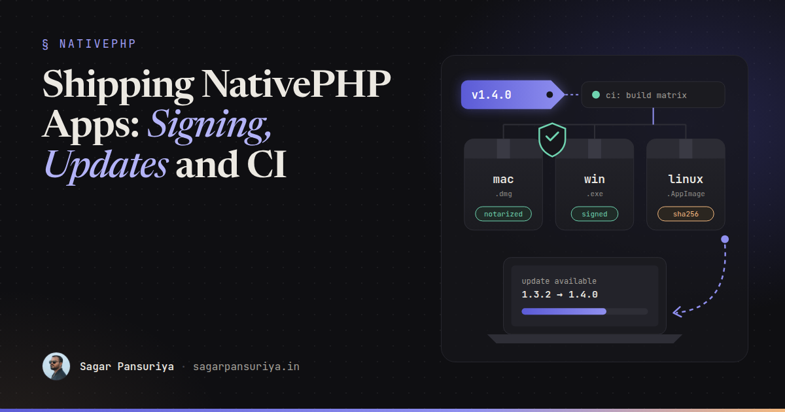
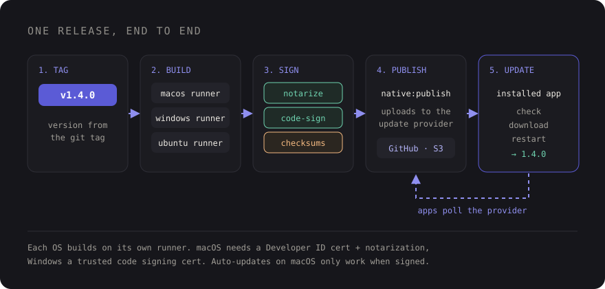

Shipping NativePHP Desktop Apps: Signing, Updates and a Real Release Pipeline


Picture the moment a NativePHP app stops being a side project. It runs perfectly on your machine,
php artisan native:serve opens a window, the team loves the demo. Then someone says
"great, let's send it to the first twenty customers", and you realise that sending a desktop app is a
completely different job from deploying a Laravel site.
There's no server you control. Every user runs their own copy, on their own OS, and the operating system itself decides whether your app is allowed to open at all. If you get the release pipeline wrong, the first thing your users see isn't your login screen. It's a warning that your app "can't be opened" or "may harm your computer".
This post walks through the pipeline I'd set up before shipping a NativePHP desktop app to real people: versioning, per-platform builds, code signing and notarization, auto-updates, a GitHub Actions matrix, and a checklist to run before every release.
Think in releases, not deploys
With a web app, a bad deploy is fixed by the next deploy. With a desktop app, a bad release lives on every machine that installed it until the user updates. That changes a few habits:
- Every build has a version number, and that number only goes up. The auto-updater compares versions to decide whether there's something new.
- Every release is reproducible. It's built by CI from a tag, not from your laptop with whatever happens to be in your working copy.
- The update path is part of the product. If version 1.0 can't update itself, you'll be emailing download links for the life of the app.

Versioning: one source of truth
NativePHP reads your app's version from its config file, config/nativephp.php, which by
default pulls it from an environment variable. That's the number baked into the build and the one the
updater compares against. Treat it like a public API version: semver, bumped on every release, never
reused.
# .env (or set in CI)
NATIVEPHP_APP_VERSION=1.4.0
NATIVEPHP_APP_ID=com.acme.timesheetsTwo things worth doing from day one:
- Pick the app ID once and never change it. It's a reverse-domain identifier the OS uses to recognise your app. Change it later and, as far as macOS or Windows is concerned, you've shipped a different app: separate settings, separate data, and updates that don't connect.
- Derive the version from the git tag in CI. Humans forget to bump a config value. A
pipeline that runs on
v*tags and sets the version from the tag name can't forget.
Also remember that your Laravel app now runs on the user's machine, with its own local database. When an update lands, your migrations run there, not on a server you can SSH into. Keep migrations additive and forgiving, because you can't hotfix a half-migrated SQLite file on a customer's laptop.
Building for each platform
NativePHP wraps your Laravel app, a bundled PHP binary and a native shell into an installable package. The build command takes the target OS:
php artisan native:build mac
php artisan native:build win
php artisan native:build linuxIn theory you can build some targets from another OS. In practice, build each platform on its own OS. macOS signing and notarization need Apple's tools, which only run on a Mac. Windows builds are least surprising on Windows. CI runners make this cheap, so there's no reason to fight it.
Before the first real build, check two things:
- What ends up in the bundle. Your whole project is packaged, so anything sitting in
the project directory can ship to users. NativePHP's config has options for removing sensitive
.envkeys and excluding files from the build. Use them, then open the built package and look. Your production database password should never be in a desktop app. - Architecture. Apple Silicon and Intel Macs, x64 and ARM Windows machines. Decide which you support, check the NativePHP docs for how your version handles architectures, and test on at least one real machine per target.
Code signing and notarization
This is the part people skip, and it's the part users notice first. Signing proves who built the app and that it hasn't been tampered with since. Without it, modern operating systems actively discourage people from running your software.
macOS
An unsigned, un-notarized app downloaded from the internet gets blocked by Gatekeeper, with a dialog that makes most non-technical users give up. To ship properly you need:
- A membership in the Apple Developer Program.
- A Developer ID Application certificate. This is the one for apps distributed
outside the Mac App Store. Export it with its private key as a
.p12file for CI. - Credentials for notarization: your Apple ID, an app-specific password generated for it, and your Team ID. Notarization means uploading the signed build to Apple, which scans it and issues a ticket that Gatekeeper trusts.
NativePHP handles the signing and notarization steps during the build when the right environment variables are present. The docs list the exact names for your version. Recent versions use variables along these lines:
NATIVEPHP_APPLE_ID=releases@acme.test
NATIVEPHP_APPLE_ID_PASS=abcd-efgh-ijkl-mnop # app-specific password, not your real one
NATIVEPHP_APPLE_TEAM_ID=AB12CD34EFThe certificate itself has to be in the keychain of the machine doing the build. Locally, that's your
login keychain. In CI, you import the .p12 from a secret into a temporary keychain before
building.
Notarization adds a few minutes to each macOS build while Apple processes the upload. Budget for it and don't mistake the wait for a hung job.
Windows
Unsigned Windows installers trigger SmartScreen: a full-screen "Windows protected your PC" warning with the Run button hidden behind "More info". Signing with a code signing certificate from a trusted certificate authority fixes the "unknown publisher" part. SmartScreen reputation still builds up over time with downloads, so the first releases of a brand-new app may still see some friction.
The practical wrinkle: code signing keys now have to live on hardware (a token or HSM) rather than in a file you can drop into CI. That pushes most teams toward a cloud signing service that signs over an API. Check which signing methods your NativePHP version supports before you buy a certificate, so you don't end up with a USB token that can't reach your build runner.
Linux
No OS-level signing gate here. AppImage and .deb packages install without a notarization
step. Publish checksums alongside your downloads so careful users can verify what they got.
Auto-updates: the feature you ship in 1.0
NativePHP includes an auto-updater built on Electron's updater. You pick an update provider, which is simply where release artifacts and update metadata live. The built-in providers cover GitHub Releases, Amazon S3 and DigitalOcean Spaces. The shape of the config looks like this (simplified):
// config/nativephp.php (excerpt, simplified)
'updater' => [
'enabled' => env('NATIVEPHP_UPDATER_ENABLED', true),
'default' => env('NATIVEPHP_UPDATER_PROVIDER', 'spaces'),
'providers' => [
'github' => [ /* owner, repo, token, ... */ ],
's3' => [ /* key, secret, region, bucket, ... */ ],
'spaces' => [ /* key, secret, name, region, ... */ ],
],
],Instead of native:build, you release with php artisan native:publish, which
builds the app and uploads the artifacts to the configured provider. Installed copies check that location,
download a newer version in the background, and install it on restart.
How to choose a provider:
| Provider | Good for | Watch out for |
|---|---|---|
| GitHub Releases | Open-source or small apps, zero extra infra | Private repos need a token, and a token baked into an app isn't truly secret |
| S3 / Spaces | Commercial apps, private code, CDN in front | Bucket permissions and keeping upload keys out of the shipped app |
Two rules that save a lot of pain:
- Auto-updates on macOS require a signed app. One more reason signing isn't optional.
- Test the update, not just the install. Install the previous release, publish the new one, and watch the old copy find it, download it and restart into it. A broken updater is the one bug you can't fix with an update.
A GitHub Actions build matrix
Here's a workflow that runs on version tags and builds each platform on a matching runner. Treat it as a starting point. The signing steps depend on your certificate setup, and secrets are named to taste.
# .github/workflows/release.yml
name: Release
on:
push:
tags: ['v*']
jobs:
build:
strategy:
fail-fast: false
matrix:
include:
- os: macos-latest
target: mac
- os: windows-latest
target: win
- os: ubuntu-latest
target: linux
runs-on: ${{ matrix.os }}
steps:
- uses: actions/checkout@v4
- uses: shivammathur/setup-php@v2
with:
php-version: '8.3'
- uses: actions/setup-node@v4
with:
node-version: '20'
- run: composer install --no-interaction --prefer-dist
- run: npm ci && npm run build
# macOS only: import the Developer ID certificate into a temporary keychain here.
- name: Build and publish
shell: bash
run: php artisan native:publish ${{ matrix.target }}
env:
NATIVEPHP_APP_VERSION: ${{ github.ref_name }}
NATIVEPHP_APPLE_ID: ${{ secrets.APPLE_ID }}
NATIVEPHP_APPLE_ID_PASS: ${{ secrets.APPLE_APP_PASSWORD }}
NATIVEPHP_APPLE_TEAM_ID: ${{ secrets.APPLE_TEAM_ID }}
# plus your update provider credentialsA few notes on it:
fail-fast: falsemeans a Windows signing hiccup doesn't cancel a macOS build that's ten minutes into notarization.github.ref_namewill bev1.4.0. Strip the leadingvin a small step if your setup expects a bare semver string.- Keep upload credentials in CI secrets only. Anything the running app needs at runtime ends up inside the bundle, so a key with write access to your update bucket should never be one of them.
The pre-release checklist
I keep a list like this in the repo and walk through it for every release, even the boring ones:
- Version bumped, tag matches, changelog written.
- App ID unchanged since the first public release.
- Built package inspected: no real
.envsecrets, no test fixtures, no stray dumps. - Migrations are additive and tested against a copy of the previous version's database.
- macOS build signed and notarized. It opens with a double-click on a Mac that has never seen it.
- Windows installer signed. The publisher name shows correctly in the install prompt.
- Previous version installed, update published, and the old copy updated itself successfully.
- First launch tested on a clean machine or VM per OS, not on the developer's laptop.
- A way back: you know how you'd ship a fixed version quickly if this one is broken.
None of this is glamorous, and most of it is a one-time setup. But it's the difference between an app people install once and trust, and one that greets them with a security warning and never updates again. Set up the pipeline before the first customer build, not after the first support email.
Discussion